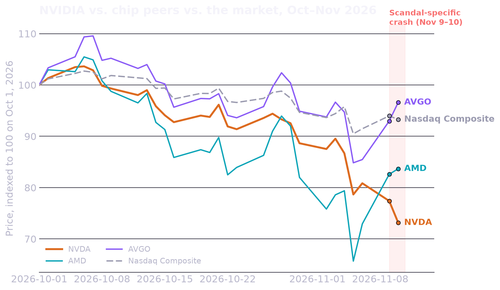
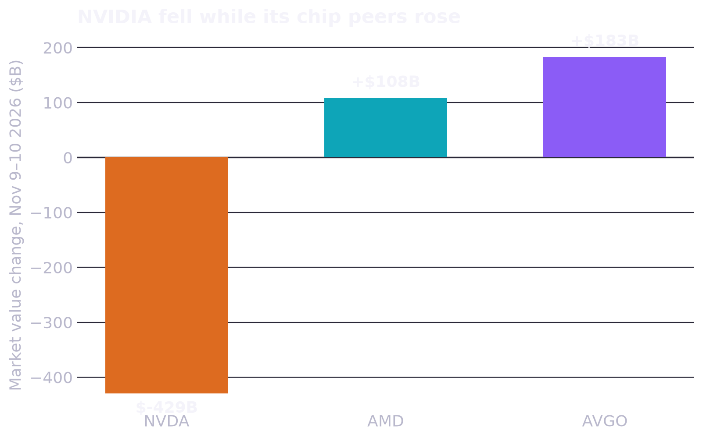
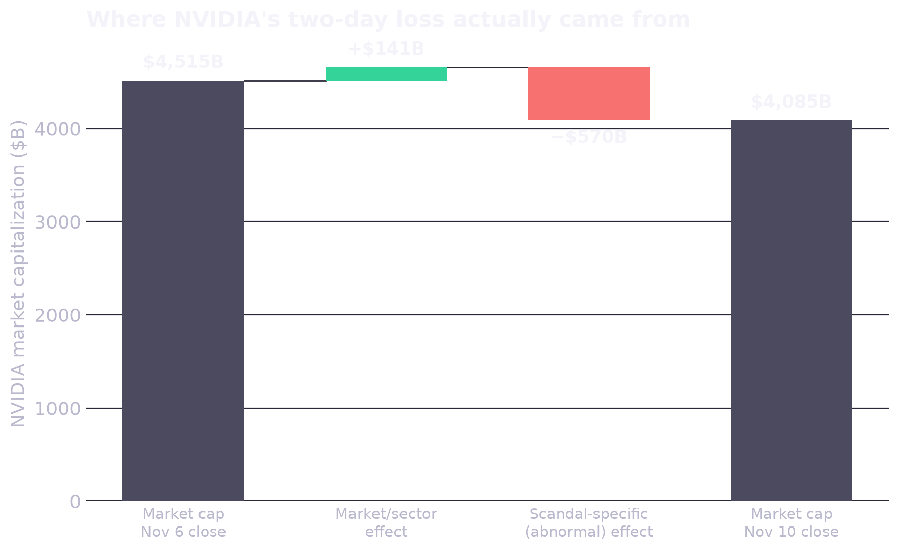

Key finding: NVIDIA's market capitalization fell roughly $429B over the two sessions of Nov 9–10, 2026 — matching the widely reported "$430B" figure almost exactly. But AMD and Broadcom rose 9–15% over the same two days. A simple market-model (beta-adjusted) estimate puts the scandal-specific, company-only loss at roughly $570B — larger than the net headline number — because the semiconductor sector was otherwise rallying while NVIDIA alone cratered.
Background
In early November 2026, NVIDIA shares fell sharply amid reporting that CEO Jensen Huang had a personal relationship with a Chinese businesswoman whom U.S. officials reportedly suspect may be a Chinese intelligence asset, and whose Singapore-based company is alleged to have helped route billions of dollars of NVIDIA chips into China. By November 10–11, reports indicated NVIDIA's independent directors had retained outside counsel to investigate, the FBI was separately examining whether Huang had been targeted by a foreign intelligence operation, and congressional Republicans were threatening to subpoena him. China has denied the intelligence allegations, and Reuters has said it could not independently verify them — this analysis makes no claim about the truth of the underlying allegations; it only measures their financial market impact.
The story is still developing at the time of writing (NVIDIA's Q3 FY2027 earnings are scheduled for November 17, 2026), so the figures below reflect data through the November 10 market close.
The question
Reuters and other outlets reported NVIDIA lost approximately $430 billion in market capitalization over two trading sessions. But November 2026 was already a rough month for AI/semiconductor stocks broadly — NVIDIA had shed nearly 20% since early October amid wider "AI bubble" concerns, well before the scandal broke. So: how much of the $430B was really the scandal, and how much was NVIDIA simply getting swept up in a sector-wide selloff it would have faced anyway?
Data & methodology
Daily OHLC price data for NVDA, AMD, AVGO, and the Nasdaq Composite (^IXIC) from January 2024 through November 10, 2026, sourced from Yahoo Finance's public market-data endpoint. Shares-outstanding figures (NVDA ~24.19B, AMD ~1.63B, AVGO ~4.77B) from public SEC filings and market-data providers as of November 2026.
This is a standard event-study / market-model approach used in finance research to separate a stock's company-specific ("abnormal") return from the return explained by broad market movement:
-
Estimate a market model for each stock over a clean
window (Oct 2025–Oct 2026, before the turmoil) by regressing
daily stock returns on Nasdaq Composite returns:
Rstock = α + β · Rmarket + ε. This gives each stock's historical sensitivity (beta) to the overall market. - Compute the expected return on each event day using that model and the market's actual return that day.
- Abnormal return = actual return − expected return. Summed across days, this is the Cumulative Abnormal Return (CAR) — the part of the move the market couldn't explain.
I treat November 5 as the broad "AI bubble fears" selloff (all three chip stocks fell together, roughly in line with their betas) and November 9–10 as the scandal-specific event window, matching the two-session timeframe cited in reporting.
Finding 1 — NVIDIA decoupled from its peers exactly when the scandal escalated

Through October and into early November, NVDA, AMD, and AVGO moved down together — consistent with sector-wide AI-valuation concerns rather than anything NVIDIA-specific. That pattern breaks completely on November 9–10: AMD and Broadcom turn sharply upward while NVIDIA keeps falling. That divergence is the financial signature of an idiosyncratic, company-specific shock.
Finding 2 — Peers gained value on the exact days NVIDIA lost it

NVDA: −9.5% (−$429B). AMD: +14.7% (+$108B). AVGO: +13.0% (+$183B). The Nasdaq Composite was roughly flat net over the two days (+2.7% then −0.7%). If NVIDIA had simply moved with its historical beta to the market during this window, the model predicts it should have gained value, not lost it — which is exactly what happened to its two closest peers.
| Symbol | Beta | Actual, Nov 9–10 | Abnormal (CAR) |
|---|---|---|---|
| NVDA | 1.45 | −9.51% | −12.63% |
| AMD | 2.48 | +14.74% | +9.03% |
| AVGO | 1.65 | +13.04% | +9.56% |
Finding 3 — Decomposing the $430B headline number

Applying NVDA's beta (1.45) to the market's actual two-day move implies the broad market/sector environment should have added roughly +$141B to NVIDIA's market cap over those two sessions. Instead, NVIDIA lost $429B net — meaning the scandal-specific (abnormal) component was roughly −$570B, partially offset by that positive market tailwind. In other words: the net $430B figure actually understates the scandal's company-specific cost, because it nets out a broad-market gain NVIDIA would otherwise have captured alongside its peers.
Limitations & caveats
- The underlying intelligence/espionage allegations are disputed and, per Reuters, independently unverified. This analysis only measures market reaction to the reporting, not the truth of the allegations.
- A single-factor market model is a simplification; it doesn't capture semiconductor-sector-specific factors (e.g., a shared industry catalyst that isn't reflected in the broad Nasdaq index). A multi-factor model using an equal-weighted peer index as the benchmark would likely sharpen these estimates further.
- This is a fast-moving story. NVIDIA reports Q3 FY2027 earnings on November 17, 2026, which could materially change the stock's trajectory and the durability of this estimate.
- Shares-outstanding figures are point-in-time estimates and change slightly with buybacks/equity issuance.
Sources
- Nvidia faces $7.5 billion chip scandal after $430 billion wipeout — GuruFocus
- Nvidia shares plunge for second day as Huang affair fallout deepens — The Globe and Mail
- Nvidia Sheds $430B in Two Days as Jensen Huang Faces Calls to Resign — Yahoo Finance
- Nvidia prepares to oust Jensen Huang, WSJ reports — stock sinks — CNBC
- Nvidia Erases 2026 Gains as Republicans Threaten Jensen Huang With Subpoena — Yahoo Finance
- Yahoo Finance historical market data (NVDA, AMD, AVGO, ^IXIC)
Data & code
Raw daily prices, computed returns, and the summary table used in this analysis: daily_prices.csv, daily_returns.csv, summary.csv. The event-study calculations and chart-generation scripts: analysis.py, charts.py.